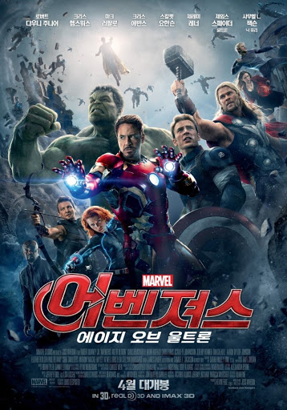

쉴드의 숙적 히드라는 연구를 통해 새로운 능력자 막시모프 남매를 탄생시키고, 히드라의 기지를 공격하는 도중 토니 스타크는 완다 막시모프의 초능력으로 인해 자신이 가장 두려워하는 미래를 보게 된다. 이에 '뉴욕전쟁' 때와 같은 사태가 벌어지지 않도록 스타크는 배너 박사와 함께 지구를 지킬 최강의 인공지능 울트론을 탄생시키게 되지만, 울트론은 예상과 다르게 지배를 벗어나 폭주하기 시작하는데...
